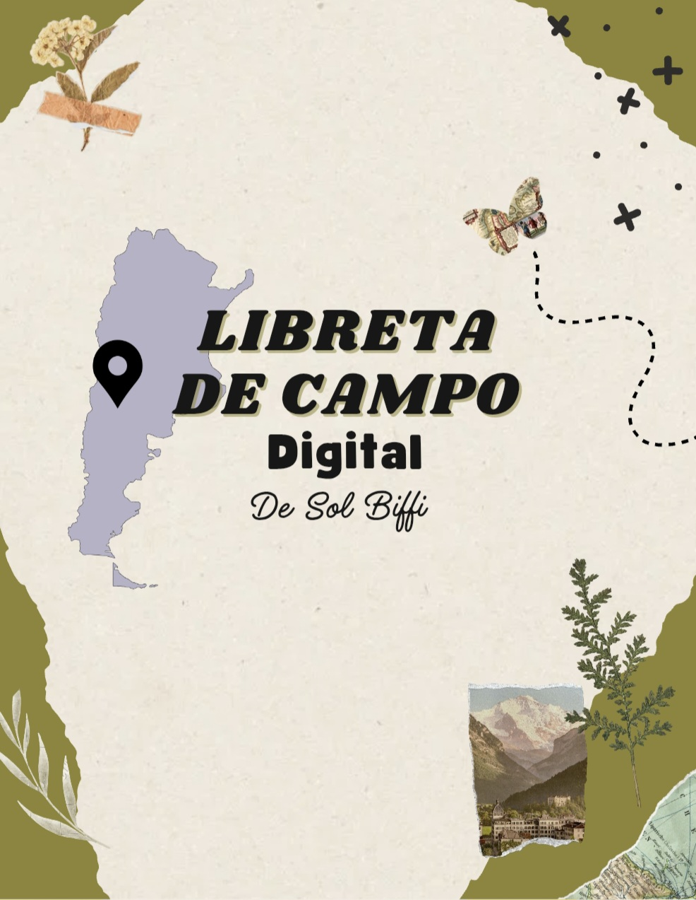

Explorando el mundo natural

Un cuaderno de campo digital para reunir experiencias, fotografías, apuntes y descubrimientos sobre la fascinante diversidad de la vida que nos rodea.
Territorio y conservación
Paleontología
En desarrollo. Archivo de organismos extintos ordenado por eones, eras, períodos y épocas.
Especies registradas
Cuaderno de aprendizaje
En desarrollo. Apuntes de zoología, anatomía comparada, evolución, ecología y fisiología.
Portfolio profesional
En desarrollo. Selección de fotografías, láminas, experiencias de campo y proyectos.
Sobre mí y contacto
En desarrollo. Formación en Biología con orientación en Zoología, intereses y contacto.